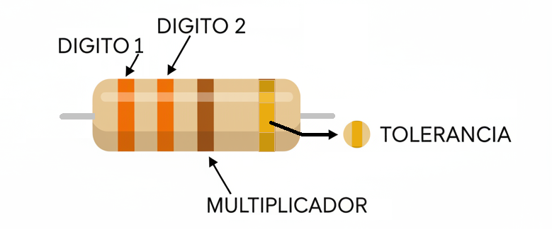
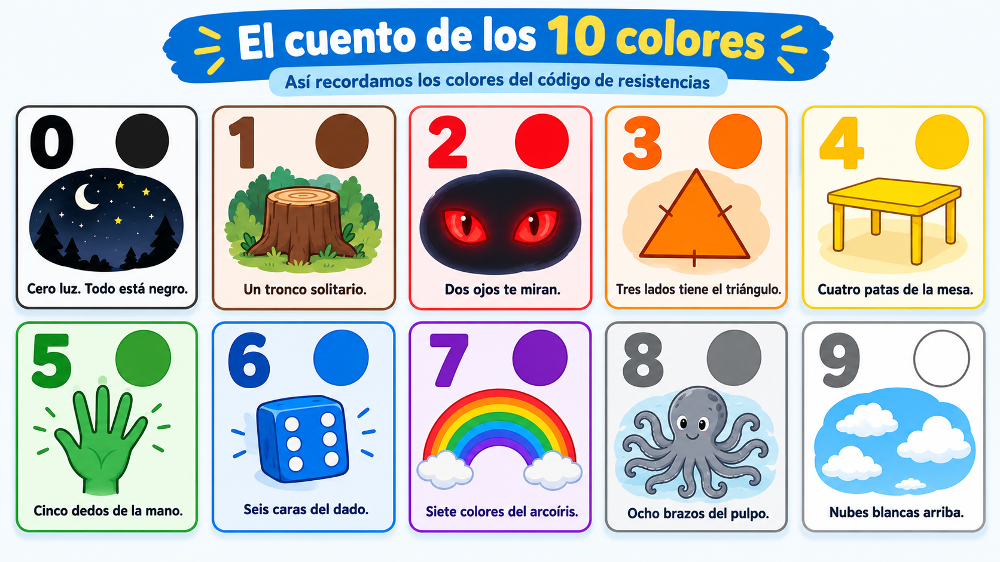
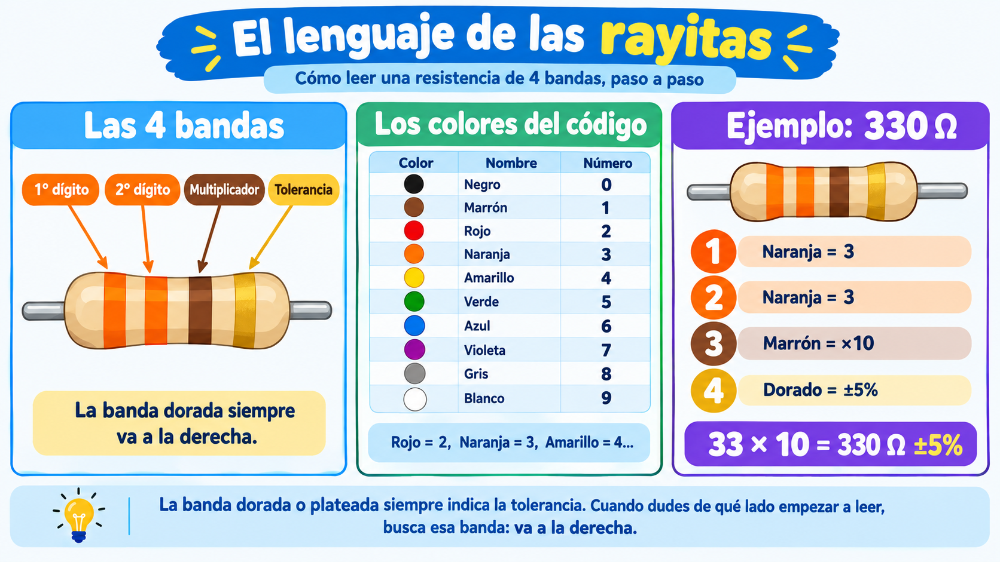

Toma una resistencia y mírala con atención. Es un pequeño cilindro de carbón, con dos patas metálicas a los lados. Y en su cuerpo, en lugar de números, tiene rayitas de colores. ¿Por qué?
La respuesta es sencilla: las resistencias son demasiado pequeñas como para imprimirles números legibles. Imagina intentar escribir "330" en un cilindro que mide menos de un centímetro. Apenas cabría, y con el tiempo se borraría.
Por eso los ingenieros inventaron un código de colores: cada color representa un número. Y con solo cuatro rayitas, la resistencia puede decir exactamente cuál es su valor.
💡 Idea clave: el código de colores es un lenguaje visual. Los ingenieros de todo el mundo lo leen igual, sin importar el idioma que hablen.
Una resistencia típica tiene cuatro bandas de color. Cada banda tiene una función específica. Vamos a conocerlas:

💡 Truco para no equivocarte: la banda de la tolerancia es la que está más separada de las otras tres. Y suele ser dorada o plateada. Cuando dudes de qué lado empezar a leer, busca la banda dorada o plateada: esa va a la derecha.
El código tiene diez colores para los dígitos, del 0 al 9 y dos colores para la tolerancia:
| Color | Valor | Color | Valor |
|---|---|---|---|
| ⚫ Negro | 0 | 🟤 Marrón | 1 |
| 🔴 Rojo | 2 | 🟠 Naranja | 3 |
| 🟡 Amarillo | 4 | 🟢 Verde | 5 |
| 🔵 Azul | 6 | 🟣 Violeta | 7 |
| ⚪ Gris | 8 | ⚪ Blanco | 9 |
| 🟡 Dorado | ±5% | ⚪ Plateado | ±10% |
Memorizar diez colores puede parecer difícil, pero hay trucos. Cada color se puede asociar con algo cotidiano:

Ahora que conoces los colores, vamos a leer una resistencia juntos. Como ejemplo, usaremos una con estas bandas:
🟠 Naranja — 🟠 Naranja — 🟤 Marrón — 🟡 Dorado
Paso 1 — Leer el primer dígito.
La primera banda es naranja. El naranja vale 3.
Paso 2 — Leer el segundo dígito.
La segunda banda también es naranja. Vale 3. Hasta ahora tenemos el número 33.
Paso 3 — Leer el multiplicador.
La tercera banda es marrón. El marrón significa ×10, es decir, agregar un cero. Entonces:
Paso 4 — Leer la tolerancia.
La cuarta banda es dorada. El dorado significa ±5%. Esto quiere decir que la resistencia vale 330 Ω, pero puede estar entre 313 y 346 Ω, y sigue siendo correcta.
Resultado final:
Esa es la resistencia que probablemente usarás para proteger un LED. ¡Ya sabes leerla!
Vas a convertirte en un clasificador de resistencias. Te darán un grupo de resistencias mezcladas, y tu misión es identificar el valor de cada una y ordenarlas de menor a mayor.
💡 Dos formas de hacer este taller: puedes hacerlo en el aula (con resistencias del kit del colegio) o llevarlo a casa para hacerlo en familia. Tu docente te dirá cuál elegir.
| # | Colores | Valor leído | Tolerancia |
|---|---|---|---|
| 1 | |||
| 2 | |||
| 3 | |||
| 4 | |||
| 5 |
Cuando termines, escribe una nota breve al final de tu hoja de registro. No es una tarea, es una reflexión. Puedes escribir sobre:
Después de leer varias resistencias, ¿cuál crees que es la ventaja de tener un código de colores en lugar de números impresos? ¿Y cuál podría ser la desventaja?
💡 ¿Sabías que…? El código de colores funciona muy bien, pero no es perfecto. ¿Qué pasa si alguien tiene daltonismo y confunde el rojo con el verde? ¿O si la resistencia está sucia y las bandas se ven mal? Por eso, en el trabajo profesional, los ingenieros siempre verifican con el multímetro. El código ayuda, pero el instrumento confirma.
⚠️ Seguridad: nunca intentes leer resistencias que estén soldadas a una placa conectada a la corriente. Si encuentras una resistencia dentro de un aparato, primero desconecta el aparato y retira las pilas. Solo lee resistencias sueltas o de aparatos sin energía.
El código de colores no lo inventó una sola persona. Fue un acuerdo entre muchos. Y esa es una historia que vale la pena conocer.
Hace casi cien años, la radio estaba en pleno auge. Los fabricantes producían resistencias de todos los tamaños y valores. Pero había un problema: cada fabricante las pintaba como quería. Un ingeniero que compraba resistencias de tres marcas distintas no podía compararlas. Todas se veían diferentes. ¡Era un caos!
Entonces los fabricantes se reunieron en una asociación llamada RMA (Radio Manufacturers Association). Y tomaron una decisión: a partir de ese momento, todos usarían el mismo código. Cada color tendría siempre el mismo valor, sin importar quién fabricara la resistencia.
Ese acuerdo funcionó tan bien que todavía lo usamos. Y no solo en radios: en computadoras, celulares, televisores, satélites. En todo el mundo.
Actualmente, el código de colores está regulado por una organización internacional llamada IEC (Comisión Electrotécnica Internacional). Eso significa que una resistencia fabricada en Japón, una en Alemania y una en Colombia se leen con el mismo código.
La lección: la normalización no la hace un genio, la hace un acuerdo. Los ingenieros se pusieron de acuerdo para hacer la vida más fácil a todos. Y ese acuerdo sigue funcionando, casi 100 años después.
Fuentes: archivos históricos de la RIA/RMA, la EIA y la norma IEC 60062.
Dale play y en menos de 5 minutos descubrirás:
💡 Escúchenlo en familia y comenten qué código usan en su casa sin darse cuenta.